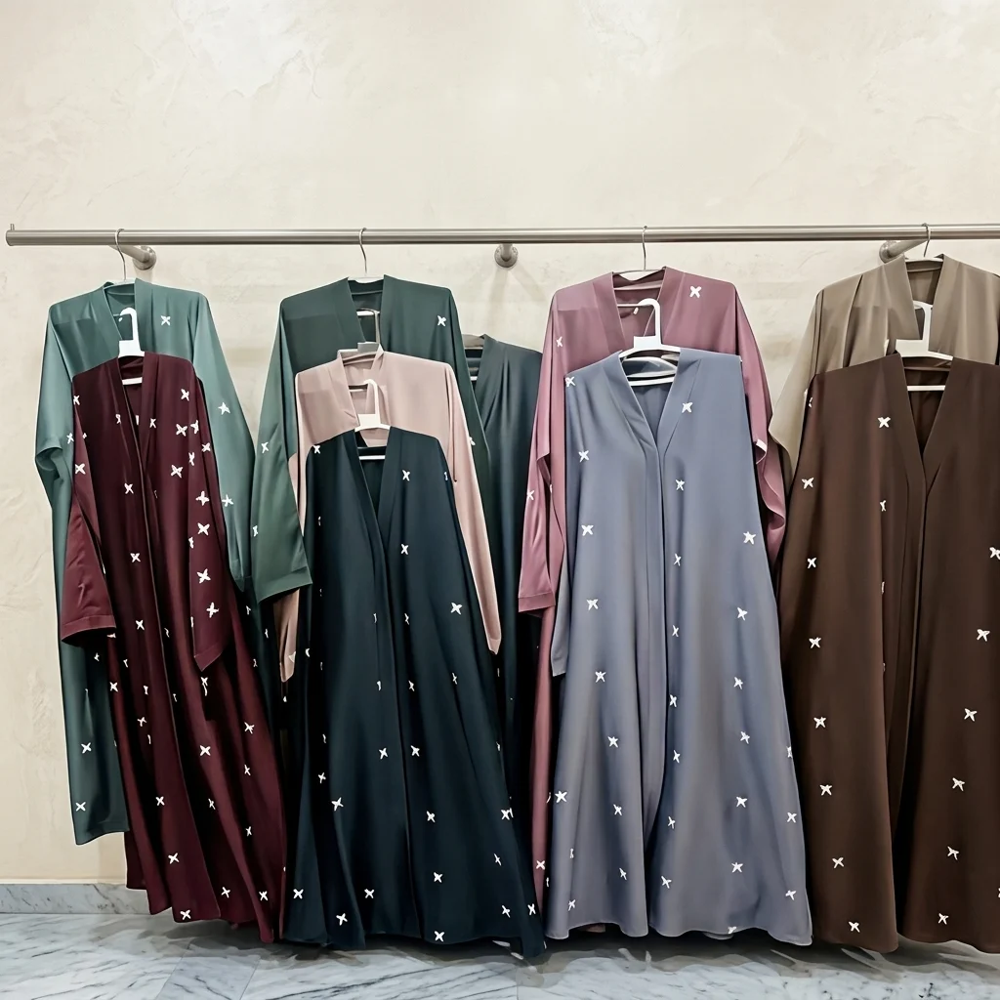

Abayas & hijabs size fit compatibility Pakistan: Size, Fit and Compatibility Checklist

When shopping for abayas and hijabs in Pakistan, size, fit, and compatibility are essential factors to consider. This checklist helps buyers navigate the options available on platforms like Sasta Milaga, ensuring they select garments that suit their body type, style preferences, and occasion needs. The provided listings include a Premium TikTok Fabric Bow Embroidered Abaya and a Chocolaty Abaya with Inner & Stoller, both labeled under the abayas & hijabs category. However, the first item is described as a standard-size abaya, while the second includes specific measurements, highlighting the need for careful review. While the category broadly covers modest wear, the actual products vary in fit, fabric, and design. Understanding these differences helps buyers make informed choices, especially when purchasing online with cash on delivery. This guide focuses on practical size and fit considerations relevant to Pakistani shoppers.
Quick buying check: Match the actual item to your task, check its measurements or compatibility, and compare the full delivered price. Read the listing and policies before you order. The examples below are catalog evidence, not hands-on test results.
Key benefits of choosing Abayas & Hijabs carefully
- Better fit for your task: select the specification or design your situation needs.
- Clearer budget: compare the item, delivery and any required extras together.
- Fewer avoidable returns: resolve missing measurements and compatibility questions before ordering.
- More useful ownership: check how the item will be stored, cleaned and used.
Selection criteria and matching the actual task for Abayas & Hijabs
When selecting abayas and hijabs, focus on accurate size measurements and how they align with your body type. Measure your bust, waist, and hips to ensure the garment fits comfortably. Consider the fabric's stretch and drape, as these affect the overall fit. In Pakistan, local sizing can vary, so refer to the brand’s specific size chart. Matching the actual task means choosing styles that suit your daily activities, whether for casual wear or formal events.
Check for compatibility with your lifestyle and cultural preferences. Some designs may be too loose or tight for certain occasions. Look for features like adjustable necklines or waistbands that offer flexibility. In Pakistan, many online retailers provide detailed descriptions and customer reviews. Use these to gauge how well the product meets your needs. Prioritize comfort and practicality over trends to ensure the item serves its purpose effectively.
Ensure the product meets your expectations by verifying details like fabric quality and construction. Some listings may exaggerate features, so cross-check with customer feedback. Consider the full cost, including shipping and return policies, especially for cash-on-delivery options. In Pakistan, delivery times and return processes can vary, so understand these before purchasing. Always follow the manufacturer’s care instructions to maintain the garment’s quality over time.
Fit, dimensions, compatibility or edition checks for Abayas & Hijabs
Check the dimensions provided by the seller against your body measurements. Measure your bust, waist, and hips accurately. Compare these with the size chart to ensure a proper fit. Keep in mind that different brands may vary in sizing. Look for detailed measurements on the product page to avoid surprises. Always verify if the size guide is specific to the region, as sizes can differ. Some sellers may provide measurements in centimeters or inches, so ensure you understand the units.
Ensure the style and design of the abaya or hijab are compatible with your needs. Consider the fabric type, length, and coverage. Some styles may not suit certain body types or occasions. Check if the product includes any additional features like adjustable straps or closures. Confirm if the design aligns with your cultural or personal preferences. Compatibility also involves how the item pairs with other clothing. For example, a long abaya may require specific undergarments.
Verify if the product is available in your region and if the delivery options match your expectations. Check for any regional restrictions or shipping limitations. Confirm if the seller offers cash on delivery, as this is a common preference in Pakistan. Ensure the return policy is clear and accessible. Understand the process for handling issues upon arrival. This helps in making a confident purchase decision. Some sellers may offer free returns, while others may charge a fee.
Quality evidence and limitations of listing claims for Abayas & Hijabs
Quality evidence for listing claims about abayas and hijabs in Pakistan should focus on verified size charts, customer feedback on fit, and clear descriptions of fabric and design. Look for listings that provide detailed measurements and real-life photos. Reliable sources include verified seller reviews and brand-specific fit guides. Avoid assumptions about how a garment will fit based on general size labels. Check if the listing includes information on fabric type, stretch, and construction, as these factors influence how the garment will drape and fit.
Limitations of listing claims often include inconsistent sizing between brands and lack of detailed fit information. Some listings may not accurately represent the actual product, leading to mismatches. Customers should check multiple sources and compare dimensions across different sellers. Be cautious of vague descriptions and ensure the listing includes clear images from various angles. Some sellers may not provide accurate measurements or may use different sizing standards, which can be misleading.
Practical advice includes cross-referencing size details with personal measurements and reading reviews from users with similar body types. Pay attention to fabric stretch and construction, as these affect fit. Use the provided checklist to evaluate each listing thoroughly before purchasing. Always verify return policies in case the item does not meet expectations. Consider the purpose of the garment—whether it is for daily wear, formal events, or special occasions—as this can influence the fit and style needed.
Budget tradeoffs and the full delivered cost for Abayas & Hijabs
Budget tradeoffs in abayas and hijabs require careful evaluation of price versus quality. Lower-cost options may lack durability or proper fit, leading to higher long-term expenses. Prioritize items that balance affordability with reliable construction and accurate sizing. Consider how often the garment will be used and whether it meets specific needs like comfort or style. Look for sellers with clear return policies in case the fit or quality doesn’t meet expectations.
Full delivered cost includes more than the listed price. Shipping, taxes, and return policies can significantly affect overall expense. Some sellers may offer free delivery, while others charge extra. Always check these details before purchasing. Understanding the total cost helps avoid unexpected charges and ensures better value for money. Be mindful of delivery timelines, as delays can impact usability. Some sellers may have limited return windows, so plan accordingly. Check if the seller offers cash on delivery, which can provide added security.
Practical advice includes comparing multiple sellers and reading customer reviews. Look for clear size charts and fit descriptions to avoid returns. Choose sellers with flexible return policies in case the item doesn’t meet expectations. This approach reduces risk and supports informed buying decisions. Always verify delivery terms and costs to plan effectively. Pay attention to details like fabric quality, stitching, and design to ensure the item meets your standards. Avoid rushing the purchase, as careful consideration leads to better outcomes.
Setup, care, storage and useful ownership for Abayas & Hijabs
Check the dimensions provided by the seller and compare them with your body measurements. Ensure the abaya or hijab has enough room for movement and comfort. Pay attention to the length and width specifications, as these can vary between brands. Measure yourself accurately in a well-lit area and refer to the size chart before purchasing. Avoid relying solely on general size labels like small or large, as they can be inconsistent across different manufacturers.
Store abayas and hijabs in a cool, dry place away from direct sunlight to prevent fading and fabric damage. Use breathable garment bags or hangers to maintain their shape and prevent wrinkles. Avoid folding them in the same spot repeatedly to prevent creases. If washing is required, follow the care label instructions carefully. Never use harsh chemicals or bleach, as they can weaken the fabric and affect the color.
Handle abayas and hijabs with care during use to avoid tears or stains. Avoid wearing them in environments with excessive dust or moisture. If damaged, repair minor issues promptly to extend their lifespan. Consider the long-term use and how the item fits into your daily routine. Regularly inspect the fabric for signs of wear and replace when necessary. Proper handling ensures the item remains functional and presentable for extended periods.
Common mistakes, arrival inspection and returns for Abayas & Hijabs
Common mistakes when purchasing abayas and hijabs in Pakistan include not verifying size charts and ignoring fabric stretch. Many buyers overlook the difference between standard and custom sizes, leading to ill-fitting garments. Always measure yourself accurately and compare with the seller's size guide. Some fabrics may shrink or stretch after washing, so check if the product mentions care instructions. Avoid relying solely on photos, as lighting and angles can distort appearance.
Arrival inspection is crucial to ensure the product matches the description. Check for any damage, stains, or incorrect colors before accepting delivery. If buying online, inspect the package immediately and document any issues. For cash on delivery, confirm the item is correct and undamaged before paying. If there are discrepancies, refuse the delivery or note the problem clearly. This helps in initiating a return or exchange smoothly.
Returns can be complicated due to varying policies among sellers. Understand the return window and conditions before purchasing. Some sellers may require the item to be in original condition with tags intact. Keep all receipts and communication records for reference. If returning via courier, use a tracked service and retain proof of shipment. Always follow the seller’s specific return instructions to avoid delays or rejection.
Future changes and responsible shopping decisions for Abayas & Hijabs
Future changes in the abayas and hijabs market in Pakistan may include more sustainable materials and adaptive designs. Consumers should look for brands that prioritize eco-friendly production and inclusive sizing. Staying informed about industry trends helps make more conscious purchasing choices. Supporting local artisans can also contribute to a more responsible fashion ecosystem. Researching brands that use recycled fabrics or ethical labor practices can guide shoppers toward more sustainable options. Paying attention to product descriptions and certifications can help identify responsible choices.
Responsible shopping decisions involve considering the long-term value of a purchase. Evaluating the quality and durability of abayas and hijabs ensures that items last longer, reducing the need for frequent replacements. Checking customer reviews and return policies can help avoid unnecessary waste. Making informed choices supports ethical consumption and minimizes environmental impact. Prioritizing well-made products that fit well and meet personal needs can lead to fewer returns and less textile waste.
Shopping for abayas and hijabs in Pakistan requires attention to fit and compatibility. Measuring accurately and understanding sizing charts can prevent returns and dissatisfaction. Exploring options that offer flexible payment methods and reliable delivery services enhances the shopping experience. Being mindful of personal needs and preferences leads to more satisfying and sustainable purchases. Checking for adjustable features such as elastic waistbands or adjustable necklines can improve fit for different body types.
A useful buying decision connects your actual task to a clearly described item. A category name, attractive photo or low headline price cannot replace checking what will arrive and whether it fits.
Illustrative Pakistan use cases for Abayas & Hijabs
Illustrative: compare a fixed PKR budget
A student with a fixed budget wants to compare full delivered costs for abayas. She checks the listed price of the Premium TikTok Fabric Bow Embroidered Abaya at 3812 PKR and the Chocolaty Abaya at 3745 PKR. She adds the delivery fee of 250 PKR to each to see the total cost. She finds that both options are under her budget, but the Chocolaty Abaya offers a slightly lower total when considering delivery.
Illustrative: check fit for shared home use
A family member is looking for an abaya that fits multiple users for shared home use. They check the standard size of the Premium TikTok Fabric Bow Embroidered Abaya and the specified measurements of the Chocolaty Abaya. They note the chest, length, and flare details to ensure the abaya can accommodate different body types. They also consider the comfort and style to find a versatile option that works for various occasions within the household.
Illustrative: plan delivery and arrival inspection
A person in a smaller town orders an abaya and plans to inspect it upon arrival. They choose the Chocolaty Abaya and pay cash on delivery. They are aware that delivery may take 3-6 working days and plan to check the item for any damage or discrepancies. They review the product description to know what to expect and are prepared to return it if it doesn’t meet their expectations within the 7-day return window.
Comparison and evidence from actual catalog listings
The following listing snapshot was recorded at 2026-11-07 05:25:15 PKT. These are seller-provided descriptions, not independent performance tests. A category label does not confirm that an item suits every task discussed in this guide. Check the linked item for its current price, availability, measurements and included accessories.
| Listed item | Snapshot price | Listing evidence and limits |
|---|---|---|
| Premium TikTok Fabric Bow Embroidered Abaya – Standard Size | Rs 3,812 | Listing description: An elegant front-open greyish-blue abaya crafted from smooth TikTok silk fabric. Features detailed white bow motifs scattered across the silhouette, wide sleeves with tassel accents, and a modest, comfortable drape. Confirm any unspecified detail with the store. |
| Chocolaty Abaya With Inner & Stoller - China Georgette | Rs 3,745 | Listing description: Chocolaty Abaya with attached inner. Made with high-quality China Georgette fabric. Specifications: - Material: China Georgette (Abaya & Stoller) - Chest: 23/24 inches - Length: 53/54 inches - Flare: 110+ inches - Stoller size: 30 x 72 inches - Colour: Chocolaty Brown Confirm any unspecified detail with the store. |
Delivery and returns: Sasta Milaga currently lists Rs 250 delivery, free above Rs 5,000. Usual estimates are 2-4 working days in major cities and 3-6 elsewhere. Returns can be requested within 7 days; damaged or wrong items return free, while other returns cost Rs 250. Check delivery terms and return terms for current conditions.
Frequently asked questions about Abayas & Hijabs in Pakistan
How do I choose Abayas & Hijabs for my needs?
To choose abayas and hijabs for your needs, consider your lifestyle and occasions. For daily wear, opt for lightweight, breathable fabrics. For formal events, look for elegant designs. Ensure the size fits comfortably and allows for ease of movement.
What should I check in the listing before ordering?
Before ordering, review the product description for fabric type, measurements, and features. Verify if the size chart matches your body dimensions. Check for any additional details like inner linings or stollers.
How do I compare the full cost in Pakistan?
To compare the full cost, add the product price and delivery fee. Check if the total meets the free delivery threshold. Consider any return fees and potential charges for damaged or wrong items.
How much is Sasta Milaga delivery and how long does it take?
Sasta Milaga currently lists Rs 250 delivery, with free delivery on orders above Rs 5,000. Usual estimates are 2-4 working days in major cities and 3-6 working days elsewhere. Read the linked delivery page for current conditions and allow for your specific address.
Can I return a damaged, wrong or unsuitable item?
The published return window is 7 days after delivery. Damaged or wrong items return free, while other returns carry a Rs 250 fee. Read the linked return policy, keep the packaging and report the issue promptly.
Are the product examples independently tested recommendations?
No. The examples are a dated snapshot of seller-provided catalog listings. We have not independently tested these items or verified customer outcomes. Prices and availability can change. Open each product page, compare the stated specifications with your needs and ask the store about missing details.
Conclusion
The abayas & hijabs size fit compatibility Pakistan is crucial for ensuring comfort and style when shopping online. With the provided listing evidence, it's clear that product descriptions and specifications vary, so buyers must carefully review each item’s details. While the catalog offers two options, neither includes specific size charts or detailed fit guidance. Practical next steps include checking the product’s dimensions against personal measurements, considering the fabric’s drape, and confirming return policies before purchasing. Always verify the listed price and delivery terms, as shipping fees and return windows can impact the overall experience.
Choose with a clear checklist. Browse Abayas & Hijabs and compare current listing details. Read how to order before placing a cash-on-delivery order. Take time to confirm the item fits your needs.
Tags: abayas & hijabs size fit compatibility Pakistan, abayas & hijabs online Pakistan, buy abayas & hijabs online, abayas & hijabs price in Pakistan, abayas & hijabs comparison, abayas & hijabs shopping checklist, abayas & hijabs cash on delivery, how to choose abayas & hijabs for everyday use, what to check before buying abayas & hijabs online, compare abayas & hijabs with delivery costs in Pakistan, abayas & hijabs size fit compatibility for Pakistani families, questions to ask before ordering abayas & hijabs with COD
More guides
Air fresheners size fit compatibility Pakistan: Size, Fit and Compatibility Checklist
Compare Air Fresheners in Pakistan: listing details, fit and delivered costs. Read product, delivery and return information before ordering.
Umrah travel checklist: documents, packing and planning
A practical Umrah checklist: passport and visa documents, what to pack for Makkah and Madinah, health preparation and booking tips.
Air conditioners (split) size fit compatibility Pakistan: Size, Fit and Compatibility Checklist
Compare Air Conditioners (Split) in Pakistan: listing details, fit and delivered costs. Read product, delivery and return information before ordering.